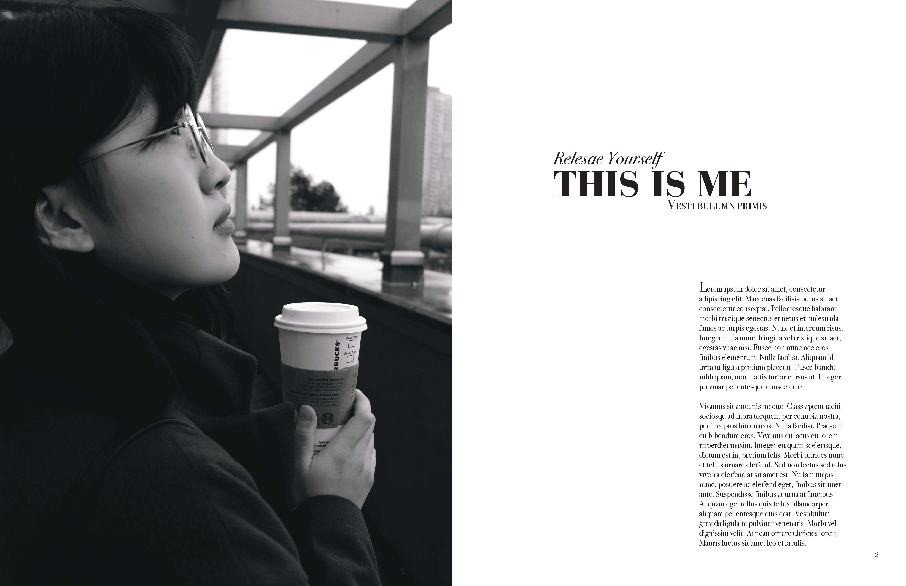
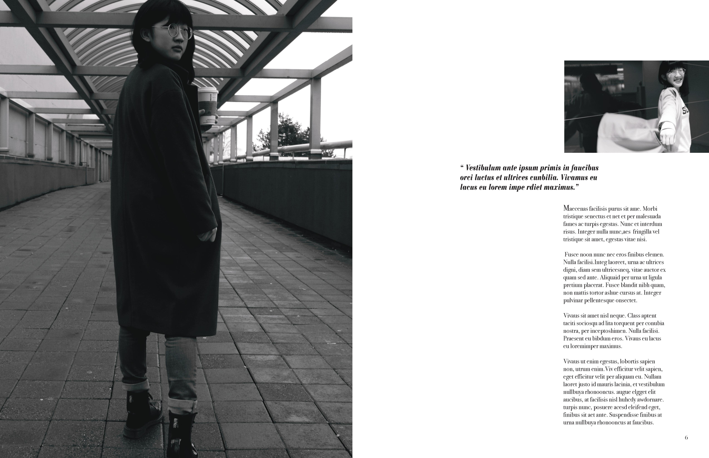
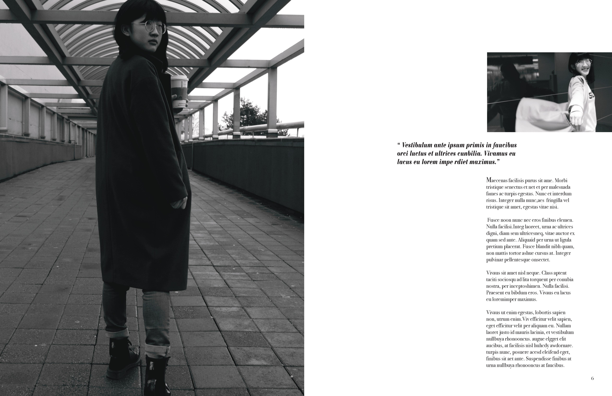
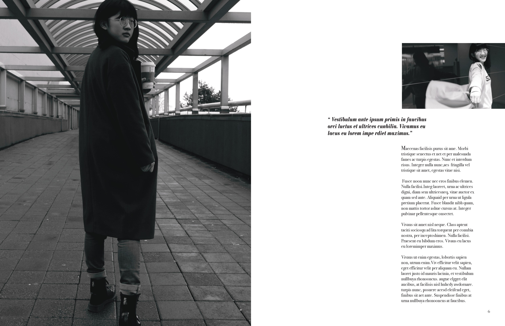
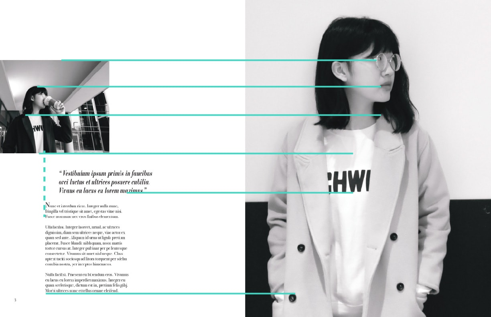

 


This project for IAT 233 is to explore relationships between type, space and image. It used which need to do a lot pre-work for images. For example, thought about if it is a good image to start first. Then I need to find contrasts in images that I can create interest. To crop images is the final step.
For this project, I considered more underlying structure that can drive invisible structure under the work in order to achieve unity.
